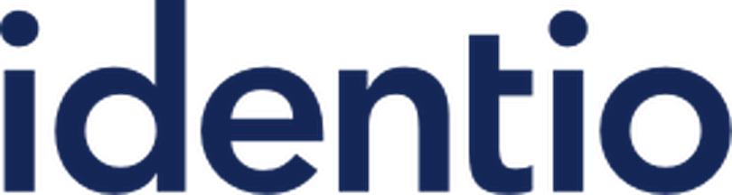
Make every speaker known at a virtual meeting between offices.
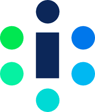
Make every speaker known at a virtual meeting between offices.
The premise
“Gone are the days of multi-conference room confusion and team members untangling who said what after a conference call.”
Overview
Design problems
Although some meeting tools attempt to provide name information, none can truly handle the most complex situations. When people on one audio line or dialed in from a single room speak to others on a conference call, people are still unable to distinguish who the speaker is, especially for the host. In the remote meetings between offices, this problem becomes more serious.
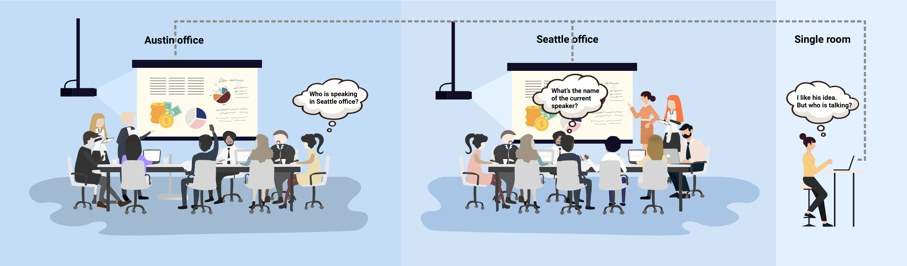
Design outcome
By utilizing voiceprint recognition technology, Identio is able to provide information about who is talking no matter the situation. In addition, by integrating with internal organizational charts, Identio can provide contextual information about the speaker such as their job title, contact information, and location.
Key features
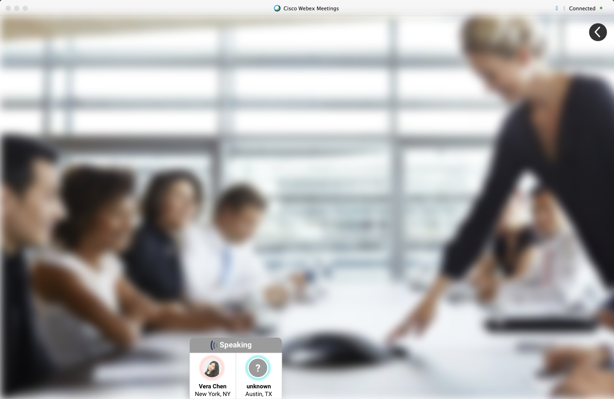
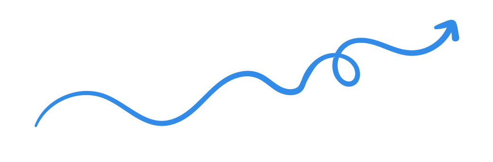
01
Identify the current speaker
Current speaker is presented in the center of the screen. You can easily obtain who is speaking, what's the title of him, which office does he come from.
02
Integrate with organizational chart
Expand our plugin, you can obtain more context information about the speaker, such as title, contact, and location.
03
Save for later contact
People need a shortcut to save contact for later contact. Knowing name is only the first step. Building connection is their real needs.
04
Position of the current speaker
“As a new participant in the office, I want to talk to someone after the meeting in person. I need to know their position.”
Design challenges
It was the first time for me to design a virtual meeting tool plugin, so desktop design skill is not enough. A non-intrusive way and saving space should always be taken into consideration to avoid interfering with the meeting screen, which impacts my design decisions. The conflict of a large amount of information and less space is my biggest challenge. Therefore I made many attempts and conducted rapid iterations.
This is how I solved the problem, step by step
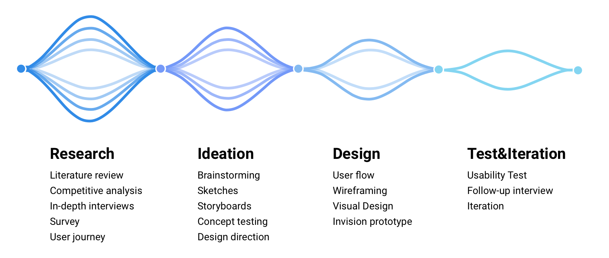
Reframe the problem
Research · Initial prompt
Helping people know who is talking to you
With our initial idea — helping people know who is talking to you — we made a research plan hoping to understand what situations people need to know names, what they did if forgetting names, and why they need to know names.
I reviewed essays to investigate the social and technology background for the ‘interpersonal communication’ culture.
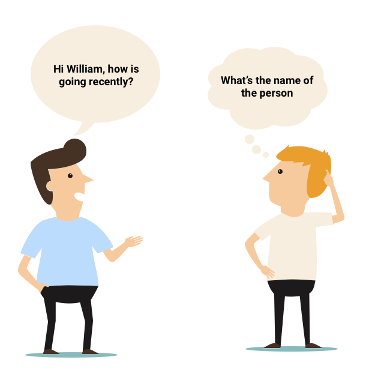
Research insights
Echo could be used to set up voice recognition. And Alexa will then use that data to create a voice profile.
Technology background“Treat everyone with respect” is one of the ground rules in meeting culture.
Meeting cultureCalling names makes people feel seen and important.
Interpersonal communicationUnderstand the context when people need to know names
Going into interviews, the scope was purposefully broad as we wanted to let the potential users influence which direction we would take. We interviewed about forgetting names, note-taking habits, and wearable use for both personal and business reasons.
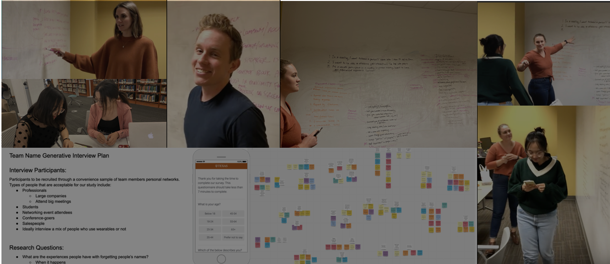
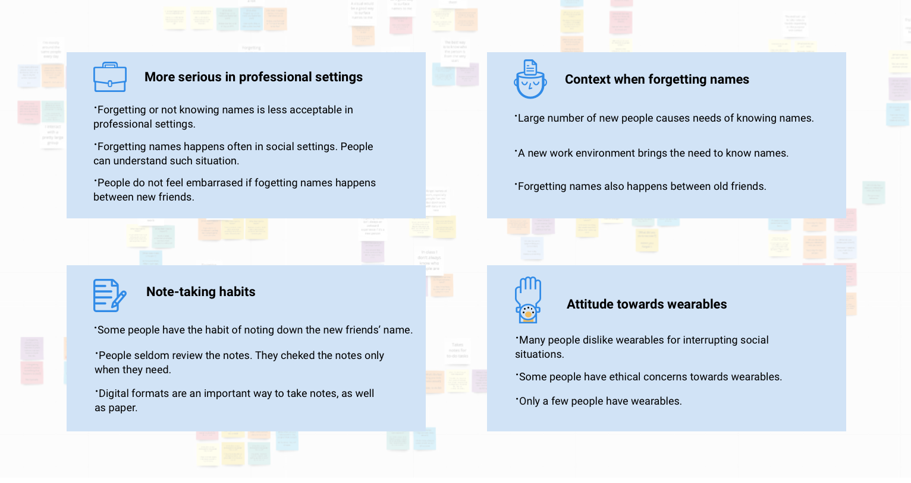
Survey: verify user groups and key problems
After interviewing, we narrowed in on the problem of forgetting names or being unable to identify someone at meetings. There appeared to be a gap where a tool could aid people in achieving this goal.
So we conducted a survey that was more focused on our business product direction to gain insight on trends from a larger sample size. Our survey data proved promising for our name-remembering and speaker-identification tool. Check out my survey framework and main findings from 127 responses.
Understand people who always have meetings, in depth
We felt unsure about what the context of failing to know a name at meetings was, what their pain points were, and what their needs were. We conducted another 3 in-depth interviews to understand the professionals.
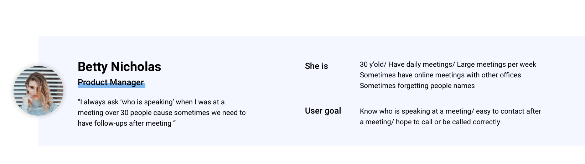
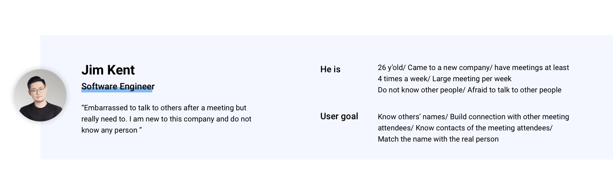
Main takeaway: being unable to know who is speaking at the other end, and losing the chance to build connection, are the key pains.
User journey — before, during, and after the conference
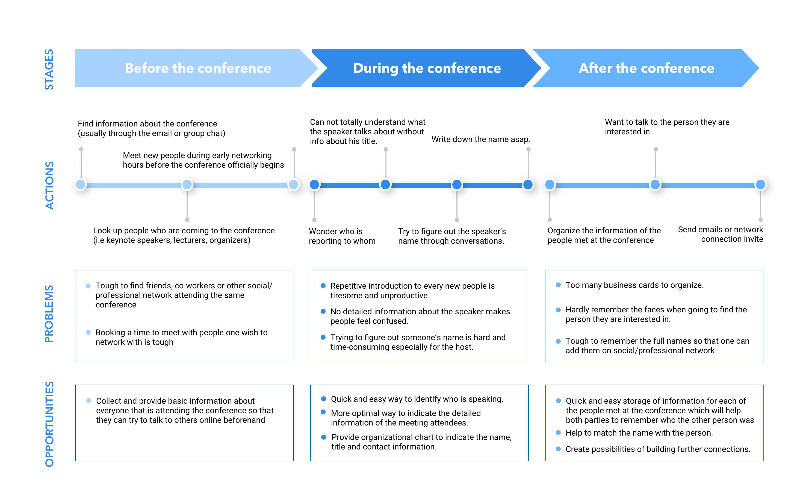
Reframing our goal
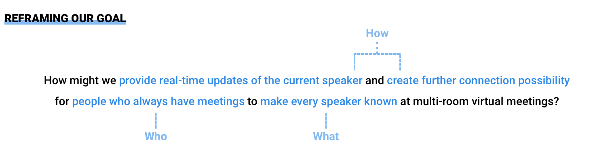
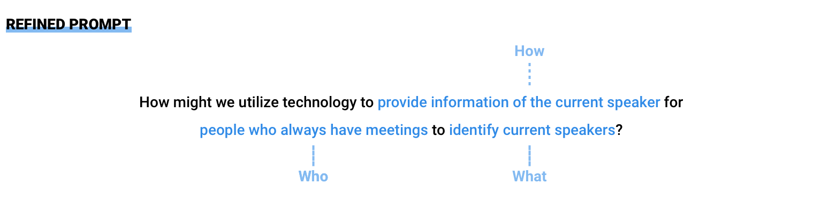
Define design challenges
Shown below is a summary of the important insights from former research and analysis. From our survey and interview data, we finalized 3 key user problems. Based on those, we defined the start point of the next stage: 3 key design challenges to solve.
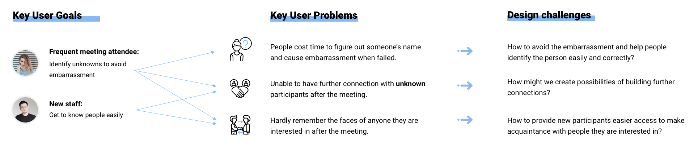
Ideation
Divergent · Brainstorming
Generating the widest possible set of ideas
Designing a new feature within the WebEx experience required us to brainstorm not only the design but how we would introduce this new flow to users. We brainstormed on a whiteboard to generate divergent ideas about necessary features and scenarios.
Concept consolidation — convergent
Next, I created an impact / feasibility chart to evaluate each idea based on the scenarios. We took many aspects into consideration: development difficulty, impact brought to our product, relevance to our goal, and user accessibility. For the convergent brainstorming session, we picked up ideas with high impact and feasibility, and prioritized which parts would make it into the first version of design.
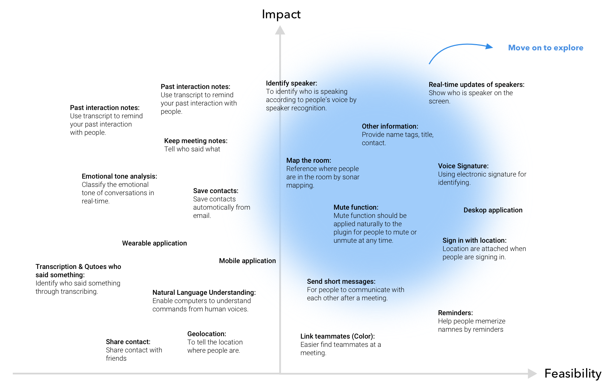
We merged solutions into 2 phases according to the user journey. But we were uncertain about how the tool could be set up to fit into people's current meeting process.
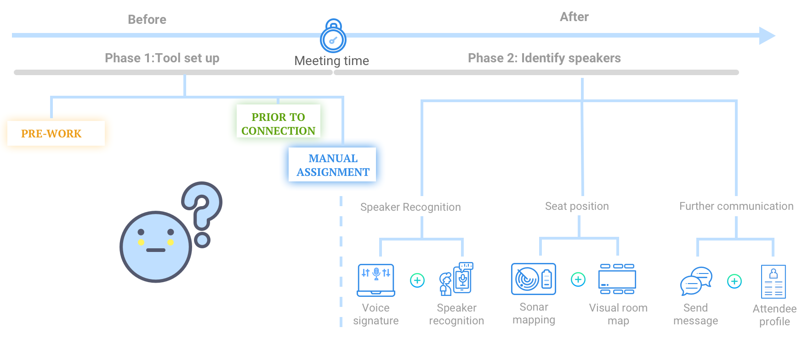
Design directions for phase 1 — how to set up our tool
We came up with 3 design directions for phase 1. We conducted concept testing with storyboards and initial wireframes to inquire about my target users' opinion on each concept and the general design.
Concept 1
Pre-work
Having everyone register ahead of time when the meeting gets sent out — meeting invitation email, voice signature reminder, login with attendee profile.
Concept 2
Prior to connection
Having people identify themselves right before the meeting connects them to the rest of the attendees — identify everyone before connection, log in with video/audio, location.
Concept 3
Manual assignment
During the meeting itself, through assignment of unknown speakers by meeting attendees — identify unknowns manually, drag and drop attendees to assign, edit the unknown speaker's name.
Concept 1 — Pre-work
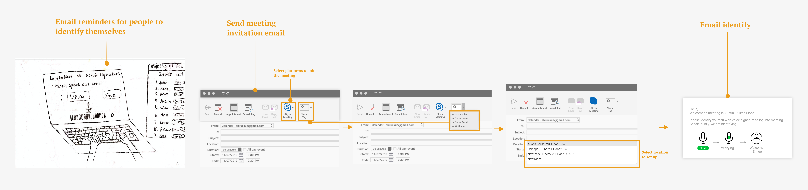
Concept 2 — Prior to connection
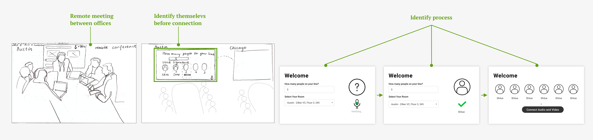
Concept 3 — Manual assignment
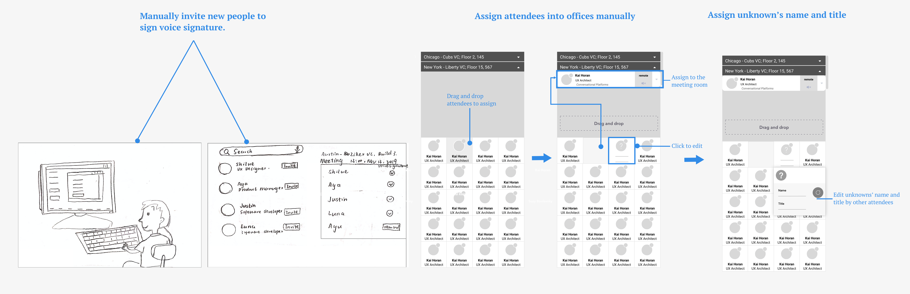
Design
Concept feedback
In all, 6 concept tests were conducted. There were some trends: the prior to connection version was ranked first by participants 4 times, and the pre-work email was ranked lowest 4 times. Based on these results we decided on a hybrid approach — meeting attendees would identify their audio and video situation before joining the call as in the prior-to-connection scenario, but could also manually assign unknown speakers once in the call to make up for technical errors.
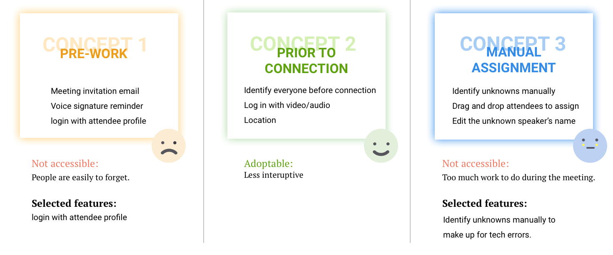
User flow diagrams
After finishing all the ideation of possible solutions, I created a user flow chart to guide me to finish the wireframes of interfaces.
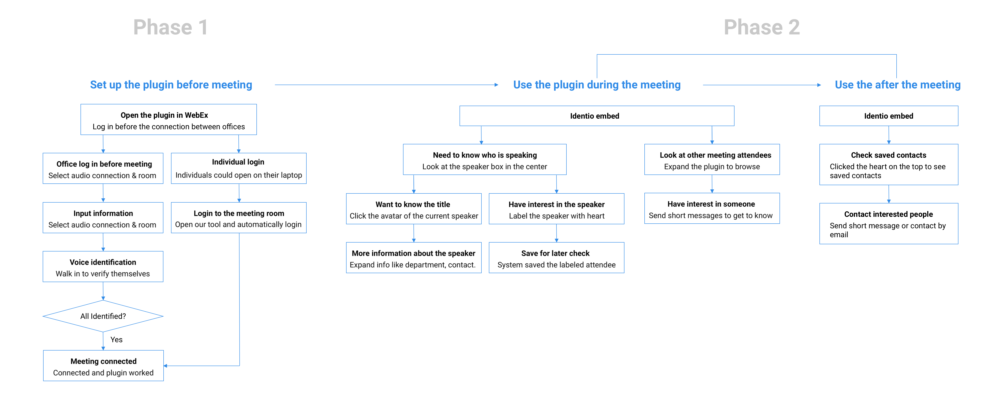
Design for phase 1 — identify attendees when setting up
Here I met a problem: how many people are included in one page at a time when identifying themselves? Combined with our understanding of users through research, I took both the users' walk-in process and the efficiency of the setting-up process into consideration. So I only keep one person to identify at a time to cater for the real meeting process and also make the page simple.
Finally, I used a forward button to switch meeting attendees during the identifying process, because the number of attendees fluctuates considerably in different meetings.
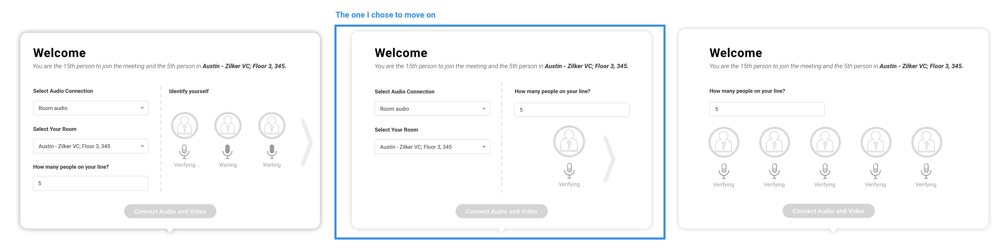
Design for phase 2 — identify speakers during the meeting
I worked out 4 layouts of the main page. Here I met a challenge: every possibility seemed like a potential solution, so how could we choose the right one to start with? I decided to involve participants in the discussion. I showed all the wireframes to them, and listened to what they thought about it.
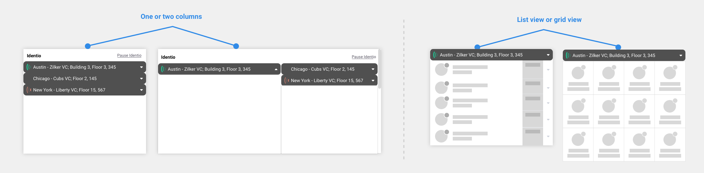
Decision #1
List view or grid view
From the conversations I found a valuable insight about people's perception of the page: people would like to know detailed information about their interested attendees, so our team abandoned the grid style layout and moved forward with the list style layout to show attendee information.
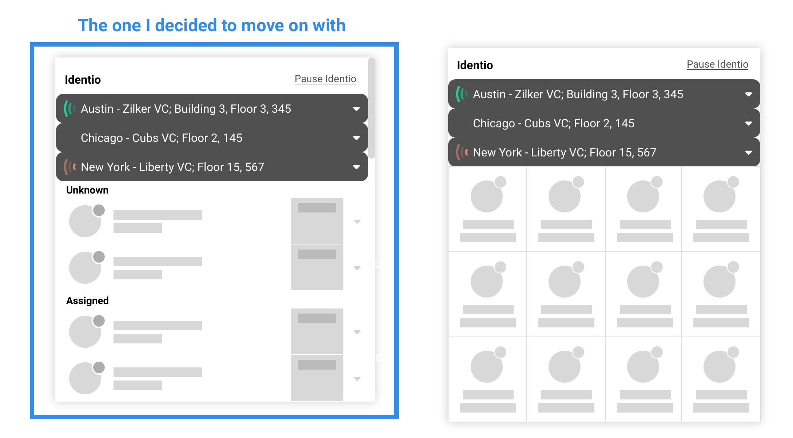
Decision #2
One column or two columns
We designed for the WebEx online meeting application, so we should figure out how to fit into the current meeting process without too much disturbance. Two columns could separate users in one office from other offices clearly, but were not friendly in space. We moved forward with the one-column layout to take up less space.
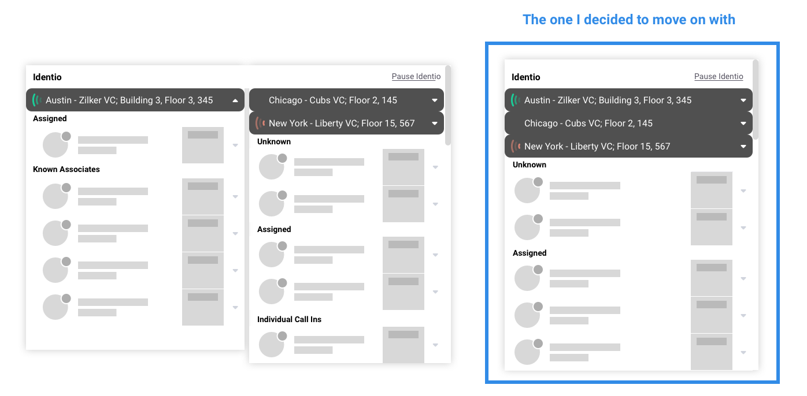
Iteration
First prototype
With the decision from the wireframe phase, I came up with the initial mid-fidelity prototype. However, we were unsure about the information priority we presented to the users. Next, we did the first round of user testing to decide priority and also gain more insights to make the high-fidelity prototype.
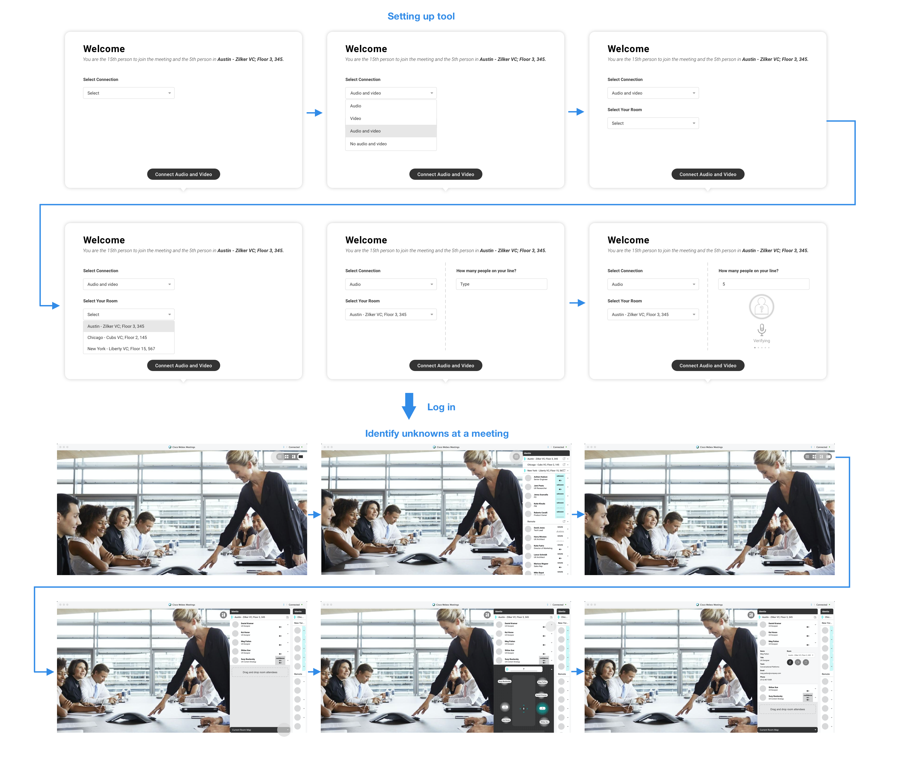
User testing & iterations
12 participants who often have meetings joined our 2 rounds of user testing. We tested with a high-fidelity prototype. The test plan is attached.
127
Survey responses
3
In-depth interviews
6
Concept tests
3rounds
Of usability testing with 17 participants
Iteration 1
Separating the current speaker and highlighting it in the most striking position
Users would like to know who is speaking at first sight. So we changed the design to highlight the current speaker on the screen. Users could still obtain who the current speaker is even when retracting the menu.
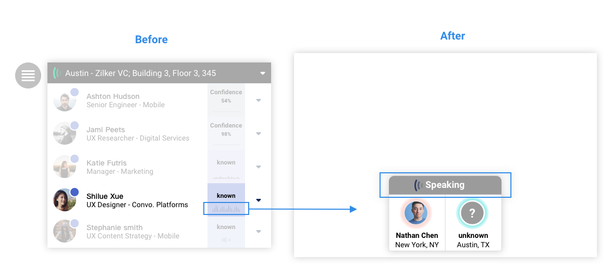
Iteration 2
Simplifying the menu design to make it more intuitive to users
Users are easily lost in switching menus. Our menu was not intuitive enough to indicate what the page is about after clicking. But we were also confronted with the problem of not enough space to give each tab a label. So I adopted an arrow icon to expand or retract our tool instead of a menu, which saves space in the meantime. But users needed to scan and scroll a lot — I improved the scrolling drawback in the following design.
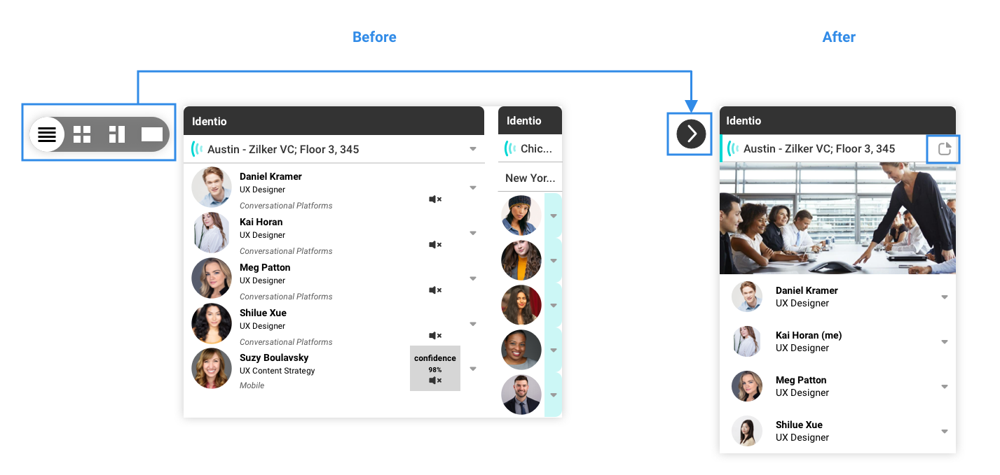
Iteration 3
Assigning an unknown speaker in one step
Users need to use the least time and effort to assign an unknown speaker during the meeting. We adopted one-step editing at last to assign unknowns. Unknowns are assigned to the right meeting room automatically according to which line they dialed in.
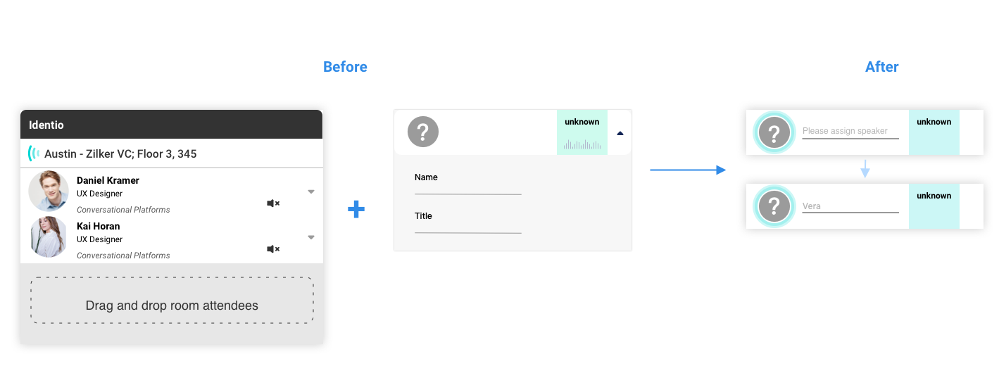
Final design
Prioritize the information
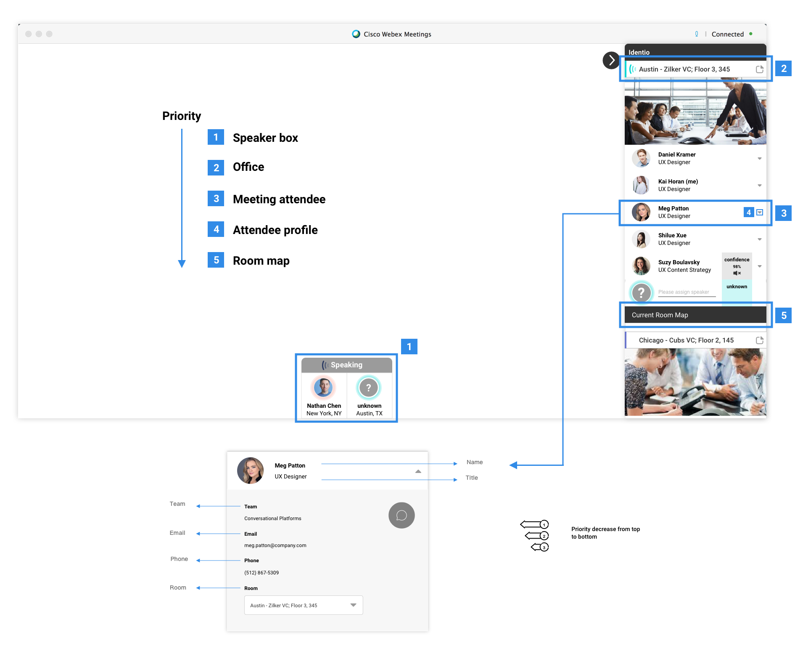
Perfecting the interaction
I did a 3rd round of usability testing after solving the most pressing problems. 5 participants contributed more possibilities in improving our identification tool. The test plan is attached.
Refinement #1
Making it more social
Users would like to check the profile of the speaker after being inspired. Therefore we provide a shortcut to get to profile information directly, which also solves the problem of scanning and scrolling too much.
Users would like to check who they liked after a meeting. Knowing the current speaker is not enough. Therefore, we provide the corresponding feature — “checking liked people” — for future contact.
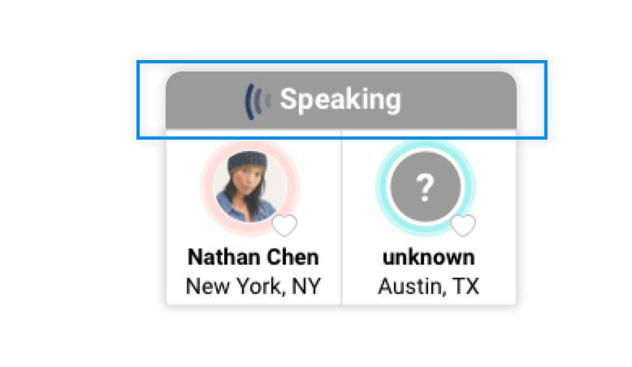
Refinement #2
Making it more intuitive
Many users did not notice the room map, and even did not open it at all. So I used a more intuitive colour — the same colour as each office — to show the room map of each office.
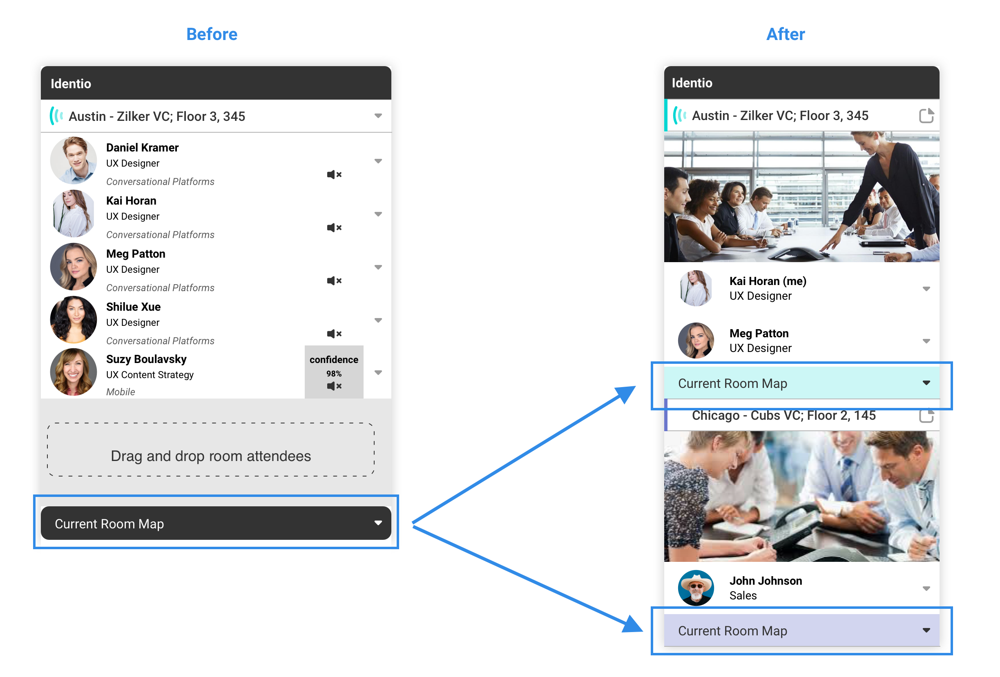
Final design details
The following shows our final design after 3 rounds of testing and iterating.
01 — Set up the tool
Attendees identify themselves before connection
Attendees themselves identify through speaker recognition before connection. Voice ID is utilized to log in to the meeting.
02 — Open the tool to view profiles
Profiles of the people you are interested in
Professionals have the need of organizational charts to understand the speaker better and build further connection. So we designed a dropdown that contains profile information, such as title, contact, office room. We also provide a message feature to send a short message to the person you like.
Need & solution
- To avoid interrupting the normal meeting, we make our tool easy to retract. Users could expand and retract the tool whenever they want. Retracting the tool does not impact the real-time update of current speakers.
- The speaker box at the bottom provides a real-time update of the current speaker, which solves the core problem of not knowing names.
03 — View the room map
Obtain the position of the current speaker
Need: new people are unfamiliar with several of the other people in the room and have the need of introducing themselves after the meeting ends.
Solution: a room map is provided and the user can label anyone's position so that they can talk to anyone after the meeting.
04 — Like and save for later review
Click “like” when you are interested in a speaker
Need: users need less scanning and scrolling, and do not have enough time to remember names during the meeting.
Solution: provide a shortcut of clicking the current speaker to see the profile. Give a like and our tool saves the information for you — users can check the details after the meeting.
Reflection
What went well
Following the research, even when it moved us
Team flexibility turned out to be the project's real asset.
The team was flexible when research took us in a different direction
Changing from a wearable-based social interactions app to a professional meeting tool wasn't a turn we foresaw, but the team took it in stride and was passionate about making sure we were really following the leads we were getting from our research efforts. The ability to bring results and individual interpretations to a shared direction was a key skill that helped us to succeed.
The product concept went over very well
It was received positively and closed a gap that people could identify with. The team did a great job of figuring out how to prototype and make such a technical, back-end product tangible so that it could be evaluated within the constraints of the project.
Good teamwork throughout the project
Working sessions proved extremely valuable, led by different members of the team, with work divided up based on the strengths and interests of the individuals.
What is still to do
If we pushed this into the real world
The product improved over three rounds of testing — these are the next steps.
Test in the context of a real meeting
Run tests with multiple participants as attendees, to understand how the product may work in the actual end-use environment and test use cases beyond the individual logged into their own laptop.
Validate idea and concept as soon as possible
Fail fast and iterate faster.
Define more comprehensive measurements for the goals
Explore future features that can add value to the product, like additional integrations to other meeting systems, new platforms (mobile, wearable, etc.) and functionality such as transcribing meetings and logging interactions.